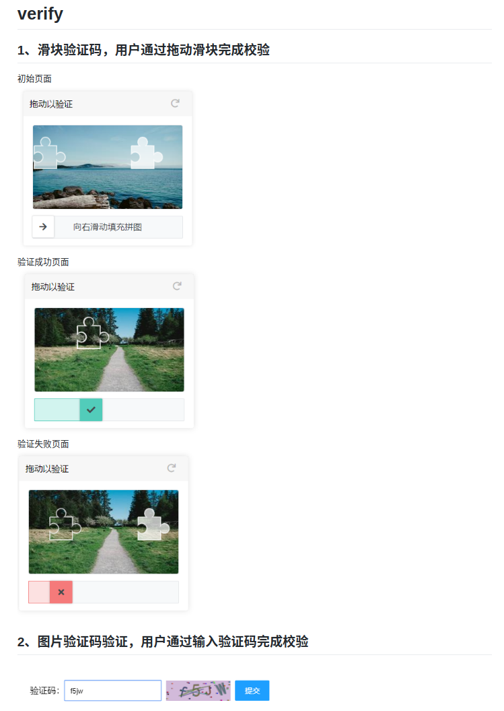

GitHub项目简介原文出处:本文由博客园博主刘舟提供。
原文连接:https://www.cnblogs.com/liuzhou1/p/12123476.html
为了存放代码新建了一个GitHub账号，存放了一些比较常用的代码块，上面的模块大部分都能找到 index.html 文件直接在浏览器打开。
地址：https://github.com/liuzhou1
目前就放了这几个项目。
1.PC端非常好用的图片预览插件 jquery-viewer
2.js 图片滑动验证，验证码验证

3.前端工程师通过微信小程序的云开发操作数据库
4.数据分页，实现跳到指定页和一页加载多少条数据
5.over-the-wall
这是用来翻墙的，想去外网看看的可以尝试，翻不翻这个自己体会。
总体而言github还是很不错的，上传下载都很方便，顺便可以学习一下git的命令行操作。